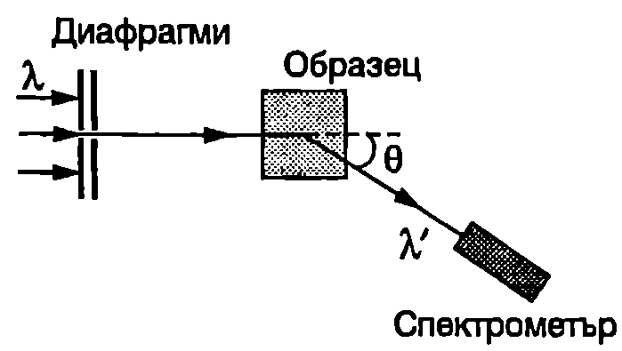
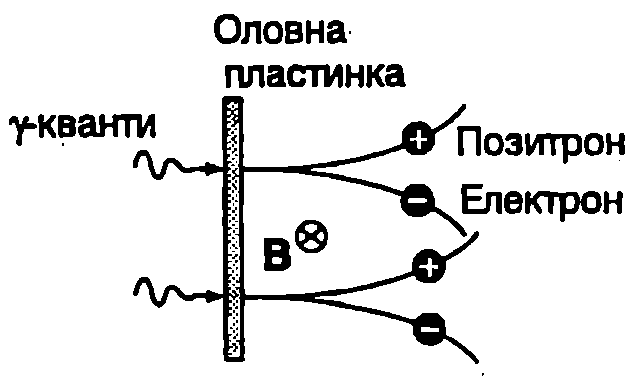

Ефект на Комптън
През 1922 година американският физик Артур Комптън (1892-1962) изследва разсейването на рентгенови лъчи от тела, съставени от леки атоми (графит, парафин и др.). Принципна схема на използваната опитна постановка е показана на Фиг. \ref{fig:103.1}. Диафрагмите отделят тесен сноп монохроматично рентгеново лъчение с дължина на вълната , който се насочва към образеца. С помощта на рентгенов спектрометър се измерва дължината на вълната на разсеяното от образеца лъчение като функция на ъгъла на разсейване .
Съгласно с класическата електродинамика електричните диполи на веществото извършват принудени трептения под действие на падащата електромагнитна вълна от рентгеновия диапазон и излъчват нови вълни, които интерферират помежду си и формират разсеяната от веществото вълна. Тъй като принудените трептения на диполите имат същата честота, както падащата вълна, следва изводът, че честотата на разсеяното лъчение трябва да е равна на честотата на падащото върху образеца лъчение. Резултатите на Комптън обаче показват, че в действителност се наблюдава изменение на дължината на вълната (честотата) на разсеяното лъчение. Експериментално е установено:
- Спектърът на разсеяното от образеца лъчение, освен първоначалната дължина на вълната , съдържа и втора компонента с по-голяма дължина на вълната ’ (’ > ).
\begin{figure}[h!] \centering  \caption{Комптъново разсейване на рентгенови лъчи.} \label{fig:103.1} \end{figure}
-
Разликата нараства при увеличаване на ъгъла .
-
При даден ъгъл на разсейване нарастването на дължината на вълната не зависи от дължината на вълната на падащото върху образеца лъчение.
-
При нарастването е еднакво за всички разсейващи вещества.
Нарастването на дължината на вълната се нарича комптъново отместване (към дълговълновата част на спектъра), а самото явление ефект на Комптън. Комптън установява експериментално следната зависимост на от ъгъла на разсейване :
където m е константа, която е наречена комптънова дължина за електрона. От уравнение \eqref{eq:103.1} следва, че \Delta$$\lambda = \lambda_c при , т.е. комптъновата дължина за електрона е равна на нарастването на дължината на вълната на рентгеновите лъчи при комптъново разсейване под прав ъгъл.
Обяснение на ефекта на Комптън е дадено през 1923 година от Комптън и Дебай с помощта на квантовата теория на лъчението. Уравнение \eqref{eq:103.1} описва разсейване на рентгенови лъчи само от леки атоми, които съдържат относително голям брой слабо свързани електрони. Енергията на връзката на тези електрони към атома е много по-малка от енергията, която те получават в резултат на разсейването. Подобни електрони могат да се разглеждат като свободни електрони. Освен това ще смятаме, че преди разсейването те се намират в покой. Ще анализираме разсейването на рентгенови фотони от свободни електрони с помощта на законите за запазване на релативистката енергия и релативисткия импулс на системата електрон - фотон. От тези закони следват уравненията
където и са енергията и импулсът на фотона преди разсейването, а и -след разсейването. е енергията на по-кой на електрона, и са съответно неговите енергия и импулс след разсейването. Умножаваме двете страни на уравнение \eqref{eq:103.3} по скоростта на светлината с и повдигаме двете уравнения \eqref{eq:103.2} и \eqref{eq:103.3} на квадрат:
\begin{figure}[h!]
\centering
 \caption{}
\label{fig:103.2}
\end{figure}
\caption{}
\label{fig:103.2}
\end{figure}
където е ъгълът между векторите и (Фиг. \ref{fig:103.2}), т.е. ъгълът на разсейване. В последното равенство е отчетено, че за фотона .
Изваждаме от първото уравнение второто и след прегрупиране получаваме
Лявата страна на уравнение \eqref{eq:103.4} е нула, защото членът в скобите е релативисткият инвариант на енергията и импулса за електрона, който е равен на (вж. уравнение \eqref{eq:99.10} на стр.243). Заместваме и ( е масата на покой на електрона) в уравнение \eqref{eq:103.4} и след съответните алгебрични преобразования получаваме
Като се сравнят уравнения \eqref{eq:103.5} и \eqref{eq:103.1} се вижда, че комптъновата дължина за електрона се изразява чрез константата на Планк , скоростта на светлината с и масата на електрона :
Стойността на , пресметната по формула \eqref{eq:103.6}, е в пълно съответствие с експерименталните данни.
Умножаваме числителя и знаменателя на уравнение \eqref{eq:103.6} по скоростта на светлината с. Получаваме: Следователно комптъновата електрона е равна на дължината на вълната на фотон, който има енергия , равна на енергията на покой на електрона .
\begin{psexample}[label=ex:103.1]{}{} Фотон с енергия, равна на енергията на покой на електрона ( MeV), се разсейва от неподвижен Каква максимална кинетична енергия може да получи електронът? \end{psexample}
Решение
Преди разсейването дължината на вълната на фотона е равна на комптъновата дължина за електрона . От уравнение \eqref{eq:103.1} се вижда, че максимално нарастване на дължината на вълната, т.е. най-голямо изменение (намаляване) на енергията на фотона, се получава при обратно разсейване () Тогава:
Следователно след разсейването дължината на вълната на фотона нараства 3 пъти, , а енергията намалява 3 пъти: Съгласно със закона за запазване на енергията при комптъновото разсейване електронът получава кинетична енергия MeV.
Раждане на двойки електрон-позитрон
\begin{figure}[h!] \centering  \caption{Раждане на двойки електрон-позитрон при бомбардиране на оловна пластинка с -кванти. Обърнете внимание, че в магнитно поле електронът и позитронът се отклоняват в противоположни посоки.} \label{fig:103.3} \end{figure} След рентгеновата област в спектъра на електромагнитните вълни са -лъчите (вж. Фиг. \ref{fig:86.7} на стр.186). Техните фотони се наричат -кванти. При достатъчно голяма енергия на -квантите е възможно такова взаимодействие на -квантите с веществото, при което се образуват двойки електрон-позитрон. Позитронът () е античастицата на електрона: има същата маса, както електрона, но подобно на протона е носител на елементарен положителен заряд. Позитроните са открити през 1932 година от американския физик Карл Андерсън, който изследва взаимодействието на космичните лъчи (потоци от заредени частици, главно протони с много голяма енергия) с горните слоеве на атмосферата. Възможността за процес, при който -квантът изчезва (анихилира), а на негово място се ражда двойка електрон-позитрон (Фиг. \ref{fig:103.3}), е била теоретично предсказана от Дирак през 1928 година, т.е. преди откриването на позитрона. Раждане на двойка може да се извърши в кулоновото поле на атомно ядро, протон или електрон. Доказва се, че без участието на трета частица процесът е невъзможен, защото противоречи на законите за запазване на енергията и импулса. Минималната енергия на -кванта, при която е възможно раждане на двойка електрон-позитрон, се нарича прагова енергия . Когато допълнителната (трета) частица, която участва в процеса, има голяма маса (ядро или протон), възможно е тя да получи почти целия импулс на -кванта, практически без да получава енергия (случаят е подобен на еластичен удар на топче в стена). Тогава цялата енергия на -кванта преминава в енергия на покой на двойката електрон-позитрон. Следователно, ако раждането на двойката става в кулоновото поле на ядро или протон, праговата енергия на -кванта е приблизително равна на удвоената енергия на покой на електрона (позитрона): MeV.
\begin{psexample}[label=ex:103.2]{}{} Раждане на електрон-позитронна двойка се извършва в кулоновото поле на неподвижен електрон. Определете минималната (прагова) енергия на -кванта, при която този процес е възможен. \end{psexample}
Решение
Съгласно със закона за запазване на импулса пълният импулс на системата от три частици (електрон + двойката електрон-позитрон) трябва да е равен на импулса на -кванта. От друга страна, при прагова енергия на -кванта системата от три частици има минимална кинетична енергия. При зададен импулс, система от частици има минимална кинетична енергия, когато всички частици се движат като едно цяло: с еднакви скорости в една и съща посока. В случая трите частици, които имат еднакви маси, ще се движат с еднакви импулси в същата посока, в която се е движил -квантът. От законите за запазване на енергията и импулса следват равенствата където и са енергията и импулсът на -кванта, , и са съответно енергията на покой и релативистката енергия на електрона (позитрона). Умножаваме второто равенство по скоростта на светлината с, вдигаме двете равенства на квадрат и от първото изваждаме второто. Получаваме:
Изразът в скобите в лявата страна на полученото равенство е нула (), а отдясно е релативисткият инвариант за електрона, чиято стойност в . Следователно
В този случай праговата енергия на -кванта е два пъти по-голяма в сравнение със случая, когато електрон-позитронната двойка се ражда с участие на тежка частица (ядро или протон). Това е така, защото законите за запазване изискват поне половината от енергията на -кванта да премине в кинетична енергия на трите леки частици (два електрона и един позитрон), докато при участие на тежка частица почти цялата енергия на -кванта може да се преобразува в енергия на покой на получената двойка електрон-позитрон.
Електрон-позитронна анихилация
Експериментално е наблюдаван и обратният процес: анихилация (от лат. анихилацио — унищожаване, изчезване) на електрон и позитрон, при който се раждат -кванти. Ще се спрем на най-простия случай, когато електронът и позитронът са неподвижни спрямо лабораторната отправна система. Преди анихилацията импулсът на системата от две частици е нула. Законът за запазване на импулса изисква общият импулс на получените -кванти също да е нула. Това условие може да се изпълни само ако се получат два или повече -кванта. Да предположим, че се раждат два -кванта. Техният общ импулс е нула, ако имат еднаква енергия и се разпространяват в протовоположни посоки. От закона за запазване на енергията следва, че енергията на -квантите е равна на енергията на покой на електрона (позитрона), т.е. дължината на вълната на полученото в резултат на анихилацията -излъчване трябва да е равна на комптъновата дължина за електрона. Този извод е потвърден експериментално с голяма точност.
Принцип на допълнителността
Фотоефектът, ефектът на Комптън, процесите на раждане и анихилация на електрон-позитронни двойки са неопровержими експериментални доказателства за квантовата природа на светлината (лъчението). В тези явления светлината се проявява като поток от частици (фотони). От друга страна, многочислените опити по интерференция, дифракция и поляризация на светлината убедително показват, че тя е електромагнитна вълна. Освен това се доказва, че вълновите свойства на лъчението не могат да се разглеждат като проява на колективното движение на голям брой фотони, подобно например на звуковите вълни, на които съответства движение на голям брой частици на материална среда (газ, течност или твърдо тяло).
През 1927 година датският физик Нилс Бор (1885-1962) формулира общ принцип на допълнителността, според който получаването на информация за определени физични величини, характеризиращи микрочастиците или лъчението, неизбежно е свързано със загуба на информация за някои други величини, които са “допълнителни” по отношение на първите. Така например в опитите, в които се получава информация за корпускулярните свойства на лъчението, се губи информацията за вълновите му свойства и обратно.
Излъчването, а както ще видим в следващата глава, и микрочастиците, едновременно съчетават свойствата на вълна и на частица. Тази двойственост вълна-частица изглежда логически противоречива от гледна точка на класическите представи, според които частиците се движат по определени траектории, а вълните представляват разпространение в пространството на изменения (трептене) на физични величини, характеризиращи някаква среда (вещество или електромагнитно поле).
Свойствата на класическите вълни и частици са несъвместими. Природата обаче е по-сложна и многообразна от нашите нагледни представи за нея. Затова, когато се опитваме да опишем свойствата на лъчението и микрочастиците с помощта на почерпените от всекидневния опит модели, налага се в едни случаи да ги разглеждаме като класически частици, а в други -като вълни. Съвременните физични теории
квантовата механика и квантовата теория на полето преодоляват ограничеността на класическите представи за вълните и частиците. Те използват подходи, основани на специфичен математичен апарат, които не противопоставят, а съчетават корпускулярните и вълновите свойства.
Задачи
-
Фотон с дължина на вълната nm се разсейва от неподвижен електрон. При какъв ъгъл на разсейване (за фотона) след разсейването електронът и фотонът имат еднаква кинетична енергия?
-
Гама-квант с енергия ( - енергия на покой на електрона) се разсейва от неподвижен електрон. След разсейването -квантът и електронът се движат симетрично: под еднакъв ъгъл спрямо посоката на разпространение на падащия -квант. Определете: а) енергията на разсеяния -квант; б) ъгъла .
-
Фотон с дължина на вълната се разсейва от неподвижен електрон под ъгъл . Под какъв ъгъл (спрямо първоначалната посока на движение на фотона) започва да се движи електронът след разсейването?
-
Позитрон с кинетична енергия , анихилира в мишена, съдържаща електрони, които се приемат за неподвижни. В резултат на анихилацията се създават два еднакви -кванта. Под какъв ъгъл в спрямо посоката на движение на позитрона се разлитат двата -кванта?
-
Гама-квант с голяма енергия се разсейва от неподвижен електрон. При какви ъгли на разсейване в след взаимодействие с веществото (с участие на тежка частица) разсеяният -квант може да породи двойка електрон-позитрон? Определете максималния ъгъл на разсейване , при който този процес е възможен за -квант с начална енергия , много по-голяма от енергията на покой на електрона .